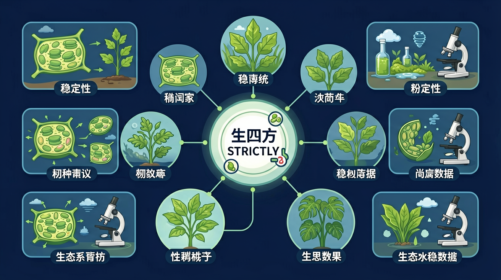

Gallery v1.0.0 · skill v7.14
生命系统怎样在种群、群落和生态系统层面保持动态平衡？

已经知道：此前已学习生态系统的组成（生产者、消费者、分解者）和食物链结构，并了解生物圈是最大的生态系统。在必修三前两章中，学生掌握了生态系统能量流动与物质循环的基础模型。
但问题是：学生常混淆抵抗力稳定性（抵抗干扰）与恢复力稳定性（恢复原状）的判定条件，且难以理解为何热带雨林抵抗力强而草原恢复力强，容易将物种多样性等同于稳定性唯一指标。
所以学：当林业部门需要评估某湿地公园在台风后的生态修复方案时，必须通过分析物种数量变化曲线和食物网受损程度，判断该生态系统的稳定性类型并提出科学管理建议。
先选一个卡点。后面的例子、互动和 AI 学伴都会围绕它给你最小提示。
选择或输入后，本课会围绕你的问题展开。
下列关于生态系统稳定性的说法正确的是
现象入口：草原遭遇短期干旱后可能恢复，若过度放牧超过阈值则可能退化。
机制解释：生态系统稳定性包括抵抗力稳定性和恢复力稳定性，取决于生物多样性、营养结构和自我调节能力。
证据抓手：证据来自干扰前后物种数量、生产力恢复曲线和食物网复杂度。
变量线索：物种多样性、食物网复杂度、干扰强度、恢复时间和人类管理。做题时先找变量，再判断机制，最后写证据。
热带雨林与农田生态系统的稳定性对比
分析营养结构复杂度如何影响抵抗力与恢复力稳定性
组分越多、食物网越复杂，抵抗力稳定性越强
设计草原保护方案时需优先控制放牧强度
情境：热带雨林抵抗力强但破坏后恢复慢，荒漠抵抗力弱但某些扰动后恢复较快。
作答路径：热带雨林物种丰富、食物网复杂（现象），使系统抵抗干扰能力强（机制），但破坏后因物种生长周期长、生态位专一导致恢复缓慢（证据）；荒漠物种少结构简单，轻微降水扰动后速生植物能快速重建群落（对比论证）。
评分提醒：典型失分：混淆两类稳定性关系，未结合具体结构分析；忽视'一般负相关'中的例外情况（如冻原生态系统）。
用 PhET 观察环境压力如何改变种群中不同表型个体的比例，再讨论它和 生态系统稳定性 的关系。
💡 操作提示：改变环境、捕食者或突变条件，记录种群数量曲线，判断哪些变化是个体层面，哪些是种群层面。
真实规律：物种越丰富、营养结构越复杂，生态系统抵抗外界干扰的能力越强，但提升幅度逐渐放缓。
💡 探究任务：调系统复杂度上限，比较草原（低）与雨林（高）的抵抗力差异，解释“绿水青山”的生态学逻辑。
认为稳定性就是永远不变，或认为生物越多恢复力一定越强。
只说“增加/减少”不够，要写清改变的是 物种多样性、食物网复杂度、干扰强度、恢复时间和人类管理 中的哪一个。
没有实验现象、曲线趋势或结构证据，答案就像猜测。
下列哪项直接影响生态系统抵抗力稳定性
视频用语音和动态画面回顾本课主线：问题情境 → 机制模型 → 证据判断 → 迁移应用。
解释生态修复、保护区管理和外来物种入侵，要判断扰动是否超过自调节范围。
提交后会检查你的解释是否包含现象、机制和变量。
如果学生只说出概念名称，继续追问：题干里哪个证据最关键？这个证据对应分子、细胞、个体还是生态系统层级？如果改变 物种多样性、食物网复杂度、干扰强度、恢复时间和人类管理 中的一个条件，结果会怎样？这三问能把答案从背诵推进到科学解释。
列举抵抗力稳定性和恢复力稳定性的定义差异
分析湿地生态系统围垦后为何难以自然恢复
设计实验验证人工林与天然林抵抗力稳定性的差异
某森林火灾后演替为灌木林，以下说法正确的是
学习小结：生态系统稳定性通过抵抗力（抗干扰）和恢复力（恢复速度）体现，营养结构复杂度与抵抗力正相关，与恢复力常负相关。
先独立作答，再点选项查看对错与错因。
对比两种治理方案，以下说法正确的是
若人工湖中鳙鱼（滤食性鱼类）突然大量死亡，最先受影响的是
下列能增强生态系统稳定性的措施是
生态系统稳定性包括____稳定性和____稳定性两方面
答案：抵抗力,恢复力
前者指抵抗干扰能力，后者指恢复原状能力
人工湖生态修复中投放螺蛳的作用是____（答出1点即可）
答案：控制藻类生长/清理有机碎屑
螺蛳属于初级消费者
关于生态系统稳定性原理，理解正确的是
设计对照实验验证苦草对藻类的抑制作用
❓ 为什么说生态系统稳定性和我的生活有关系？
❓ 抵抗力稳定性和恢复力稳定性到底谁更重要？
❓ 课本说负反馈调节是核心，可为啥我看到的都是物种灭绝？
学完这一课，这些问题你都能自信地回答。
✅ 关键看功能群冗余而非单纯数量
💡 混淆多样性与功能多样性
✅ 抵抗力是保持波动范围的能力
💡 未理解动态平衡概念
口诀：抵抗恢复两兄弟，负反馈是稳压器
类比：像弹簧床：有的材质硬（抵抗力强），有的回弹快（恢复力强）